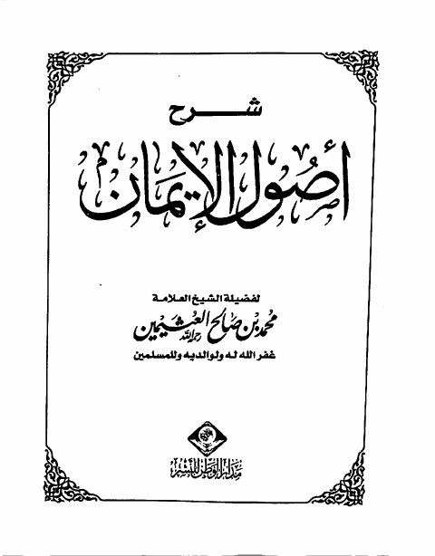

Downloads need an internet connection.
شرح أصول الإيمان- العثيمين
Authors: محمد بن صالح العثيمين
Publishers: مدار الوطن للنشر
**▫️ العنوان: شرح أصول الإيمان- العثيمين** ▪️ المؤلف: #محمد_بن_صالح_العثيمين ▫️ الناشر: #مدار_الوطن_للنشر ▪️ تاريخ النشر: 1432هـ 2011م ▫️ بلد النشر: الرياض، #السعودية ▪️ الطبعة: 3 ▫️ عدد الأجزاء: 1 ▪️ الصفحات: 68 ▫️ نوع الوعاء: #كتاب ▪️ التصنيف الرئيسي: #العقيدة_والمذاهب_والأديان ▫️ التصنيف الفرعي: #الإيمان ۪